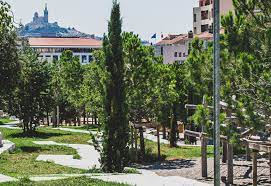

Le patrimoine des espaces verts de la Ville de Marseille recouvre plus de 700 hectares : parcs, jardins, espaces verts de voirie, cimetières, squares... Ce patrimoine est en augmentation constante et permet d’offrir aux Marseillais un panel d’aménagements variés et ludiques. Marseille possède aujourd’hui 58 parcs d’une superficie supérieure à 1 hectare, dont 16 de plus de 5 hectares. Certains parcs ont un caractère patrimonial original notamment :
Parc Longchamp
sous le signe de la culture et de la nature. Conçu par Espérandieu comme un écrin au "Palais Longchamp" et réalisé à l'arrière du château d'eau, il a été tracé "à la française", dans l'esprit d'Édouard André.

Jardin de la Colline Puget
Le plus ancien jardin public de Marseille.
Jardin du Pharo
Le Jardin du Pharo ou Émile-Duclaux, entoure le Palais du Pharo. D'une superficie de 5,7 hectares, il offre une vue imprenable sur le Vieux-Port et la côte Nord de Marseille, le Mucem et le ballet des ferries quittant le port.
Jardin de Corbière
Situé à l’extrémité Nord de Marseille, en limite de la commune du Rove, le site de Corbière - qui s'étend sur 2,1 hectares - occupe une position privilégiée. Abrité du mistral par la falaise qui le domine et orienté Sud-Ouest, il bénéficie d’un microclimat et d’une température clémente, même en plein hiver.

Parc du 26ème centenaire
Situé en plein cœur de Marseille, le Parc du 26e centenaire s’étend sur 10,5 hectares. Il a été aménagé sur le site de l'ancienne gare du Prado.
Parc Athéna
Le parc Athéna, situé au cœur du Pôle technologique de Château Gombert, s’étend sur 14,5 hectares d’anciennes terres agricoles.
le parc de la Moline
D'une superficie de 11 hectares, il fut créé par les paysagistes de ILEX,ouvert aux usagers depuis septembre 2005..
Parc de la Porte d'Aix
Le parc de la Porte d'Aix (3e) a ouvert ses portes aux Marseillaises et aux Marseillais le 4 juillet 2022.
